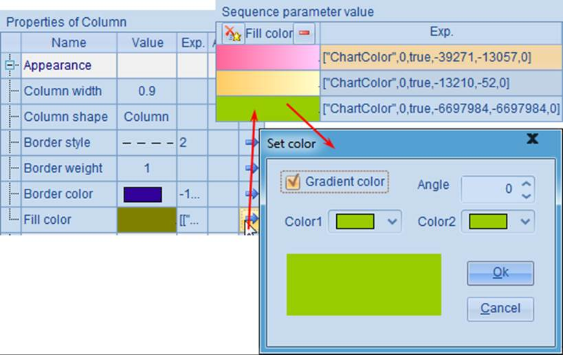
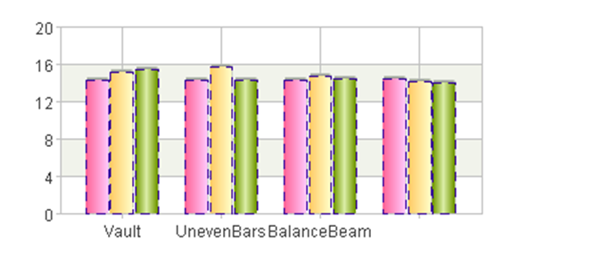
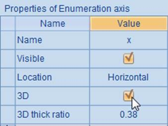
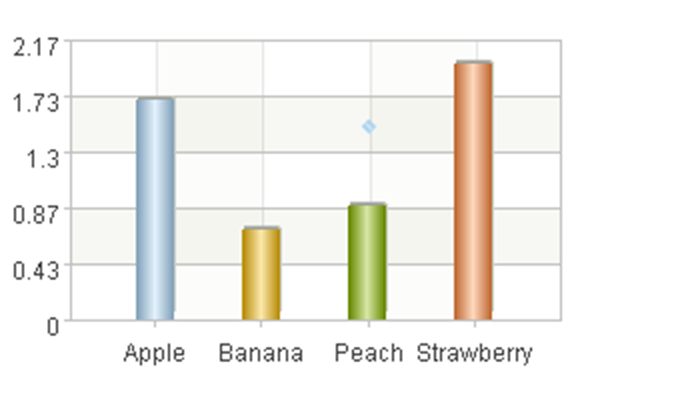
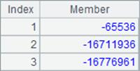
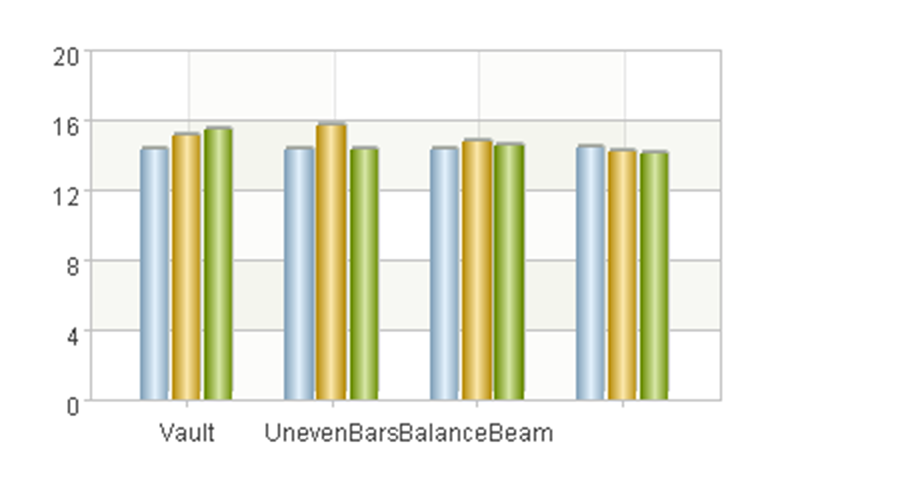
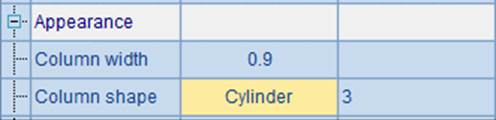
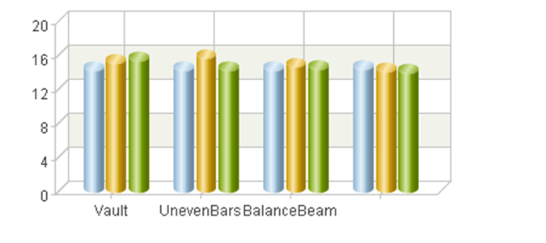
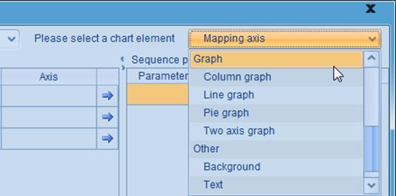
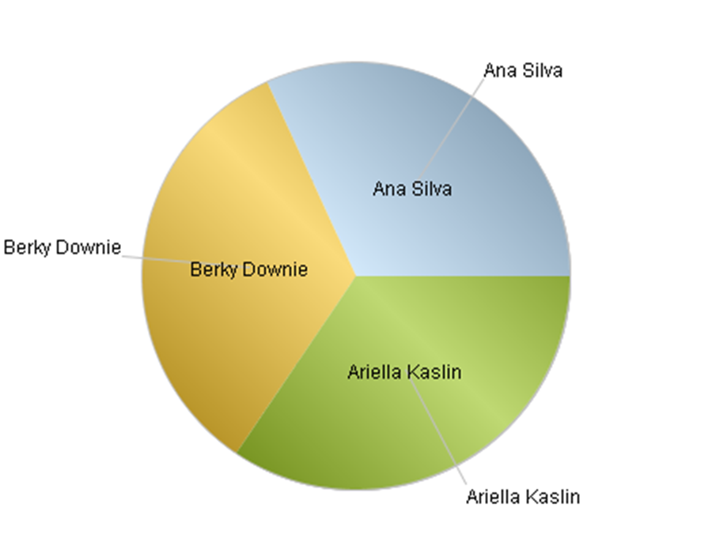

12.7.3 Appearance properties
Like the appearance properties discussed in The Dot Element, you can set the border style and fill color for the column element too. For example, modifying A6¡¯s chart parameters to change the column element¡¯s properties:

Restore column width to its default value; set border style of the column element as blue dashes and the border weight as 1. Use a sequence to set fill colors for the columns. Gradient color is checked for the 3rd fill color, but both color 1 and color 2 properties have the same setting. Then the plotting result is:

You can see that the columns¡¯ border styles and fill colors have thus changed. The fill colors set via a sequence will be used cyclically. When the settings of Color1 and Color2 for the gradient are the same, a lighting effect will be generated automatically.
In addition to the border style and fill color and the column width talked about in the preceding section, the appearance properties of the column element also include Column shape. Besides the common bars, there are also 3D columns and cylinders, which are usually used in a 3D coordinate system.
If the 3D property of one of the axes used by the chart element is checked, the plotting will take on the 3D effect. Modify the chart properties for the enumeration axis by editing A4:

By setting the x-axis as a 3D axis, the entire coordinate system will assume the 3D effect during plotting. But, if the column shape remains the column, a two-dimensional column chart will be plotted, which is not in harmony with the 3D coordinate system. To fix this issue, modify the column shape into 3D column in A6 and restore default value for border style and fill color, as shown below:

This way, a 3D column chart is plotted:

In the chart, both the horizontal and vertical axes are three-dimensional. To adjust the thickness of the 3D chart, modify 3D¡¯s Axis¡¯s thickness ratio under the 3D property. Note that the thick ratio is set according to the default width mentioned in the previous section.

Now look at the plotting result and feel the change of the 3D thickness:

Or you can set a cylinder shape:

And the plotting result is:

In particular, when plotting a 3D chart, if you don¡¯t set the line style for a certain axis, then this axis will be plotted as a platform. For example, modifying A4¡¯s parameters of line color and line style for the x-axis in the plotting algorithm:

Then the plotting result is:
